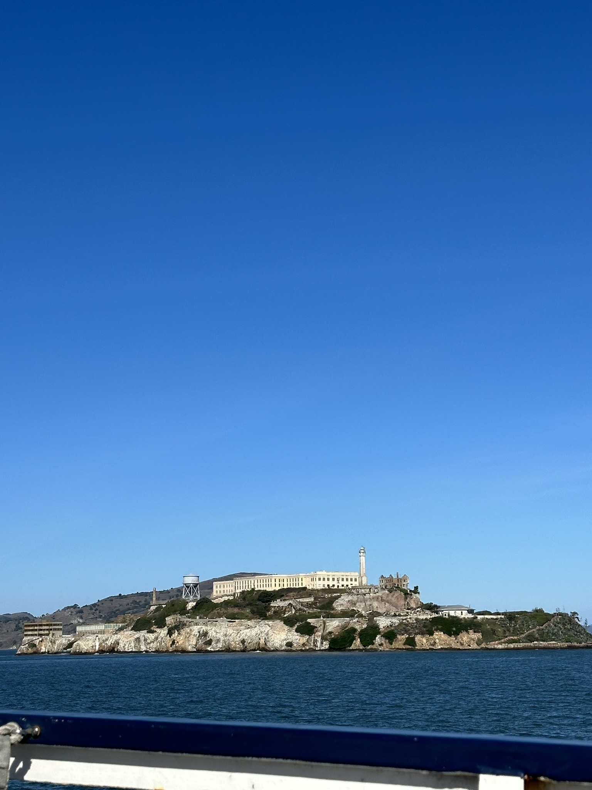
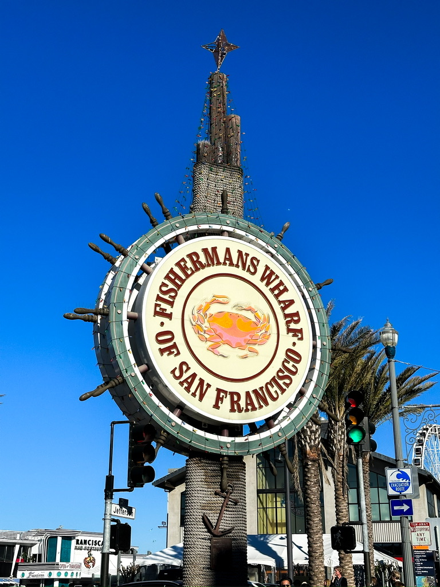
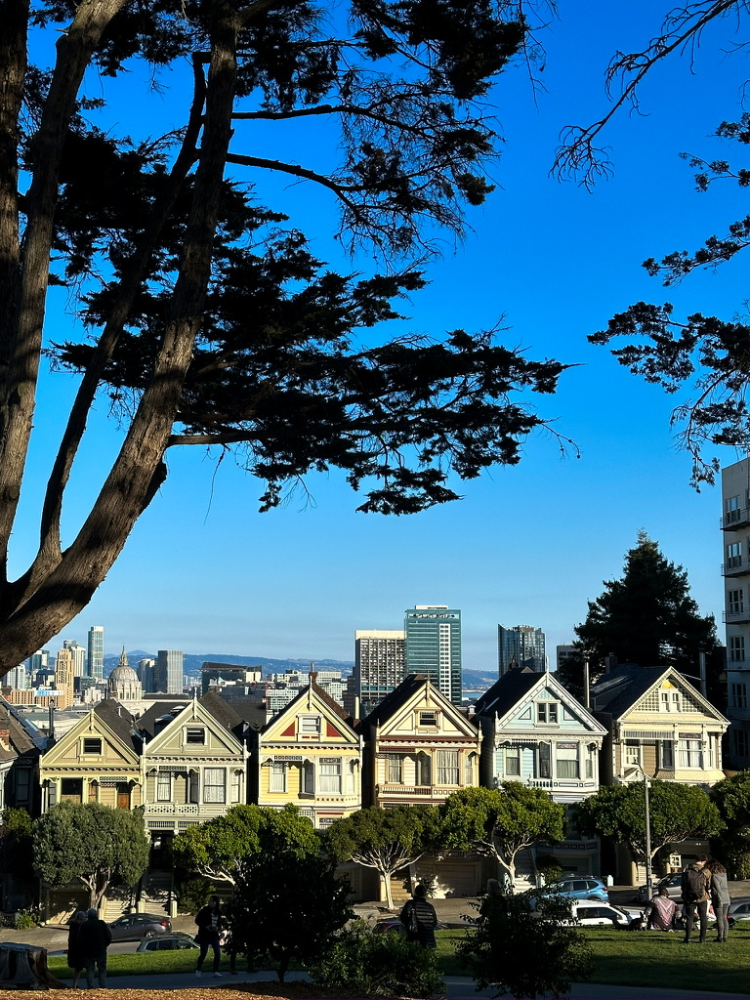
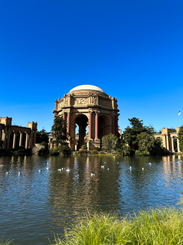

San Francisco
San Francisco is a vibrant city known for its iconic Golden Gate Bridge, historic cable cars, and diverse culture. The city offers a mix of urban attractions and natural beauty, making it a popular destination for travelers.
Top Attractions
- Golden Gate Bridge: A must-see landmark that offers stunning views of the bay.
- Alcatraz Island: Explore the infamous former prison and learn about its history.
- Fisherman's Wharf: A lively area with seafood restaurants, shops, and street performers.
- Chinatown: The oldest Chinatown in North America, offering a rich cultural experience.
- Painted Ladies: Iconic Victorian houses with a backdrop of the city skyline.
- Place of Fine Arts: A beautiful museum and performing arts center.
- Lombard Street: Known for its steep, winding roads and colorful houses.
Local Cuisine
San Francisco is known for its diverse food scene. Don't miss trying clam chowder in a sourdough bread bowl, fresh seafood, and the city's famous Mission-style burritos.
Top Restaurants
- Lori's Diner:: A popular spot for authentic American cuisine.
- Sutter Pub & Restaurant: A Irish pub with a great selection of beers and traditional dishes.
- Bubba Gump Shrimp Co.: A popular seafood restaurant known for its shrimp dishes.
A Few Photos




